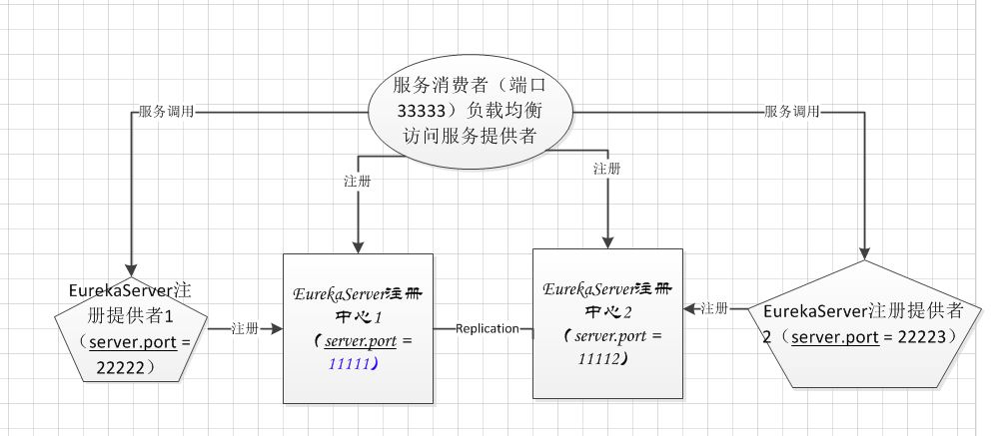

springcloud 服务注册中心高可用环境搭建¶
注册中心server端¶
刚开始搭建的时候，由于版本号没有对应，废了一写时间！
- spring 1.5.x 对应 springcloud 的 d 和 e 版本
- spring 2.0.x 对应 springcloud 的 f 版本
具体详见官方文档
1. 搭建一个spring boot应用，这里以2.0.0版本为例¶
修改pom.xml
<?xml version="1.0" encoding="UTF-8"?>
<project xmlns="http://maven.apache.org/POM/4.0.0" xmlns:xsi="http://www.w3.org/2001/XMLSchema-instance"
xsi:schemaLocation="http://maven.apache.org/POM/4.0.0 http://maven.apache.org/xsd/maven-4.0.0.xsd">
<modelVersion>4.0.0</modelVersion>
<groupId>com.spdb.cdu</groupId>
<artifactId>springcloud</artifactId>
<version>0.0.1-SNAPSHOT</version>
<packaging>jar</packaging>
<name>springcloud</name>
<description>springcloud</description>
<parent>
<groupId>org.springframework.boot</groupId>
<artifactId>spring-boot-starter-parent</artifactId>
<version>2.0.0.RELEASE</version>
<relativePath/> <!-- lookup parent from repository -->
</parent>
<properties>
<project.build.sourceEncoding>UTF-8</project.build.sourceEncoding>
<project.reporting.outputEncoding>UTF-8</project.reporting.outputEncoding>
<java.version>1.8</java.version>
<spring-cloud.version>Finchley.M8</spring-cloud.version>
</properties>
<dependencies>
<dependency>
<groupId>org.springframework.boot</groupId>
<artifactId>spring-boot-starter-web</artifactId>
</dependency>
<!-- <dependency>
<groupId>org.springframework.cloud</groupId>
<artifactId>spring-cloud-starter-gateway</artifactId>
</dependency> -->
<!-- <dependency>
<groupId>org.springframework.cloud</groupId>
<artifactId>spring-cloud-starter-netflix-eureka-client</artifactId>
</dependency> -->
<dependency>
<groupId>org.springframework.cloud</groupId>
<artifactId>spring-cloud-starter-netflix-eureka-server</artifactId>
</dependency>
<!-- <dependency>
<groupId>org.springframework.cloud</groupId>
<artifactId>spring-cloud-starter-netflix-hystrix</artifactId>
</dependency> -->
<!-- <dependency>
<groupId>org.springframework.cloud</groupId>
<artifactId>spring-cloud-starter-netflix-ribbon</artifactId>
</dependency> -->
<!-- <dependency>
<groupId>org.springframework.cloud</groupId>
<artifactId>spring-cloud-starter-netflix-zuul</artifactId>
</dependency>
<dependency>
<groupId>org.springframework.cloud</groupId>
<artifactId>spring-cloud-starter-openfeign</artifactId>
</dependency> -->
<dependency>
<groupId>org.springframework.boot</groupId>
<artifactId>spring-boot-starter-test</artifactId>
<scope>test</scope>
</dependency>
</dependencies>
<dependencyManagement>
<dependencies>
<dependency>
<groupId>org.springframework.cloud</groupId>
<artifactId>spring-cloud-dependencies</artifactId>
<version>${spring-cloud.version}</version>
<type>pom</type>
<scope>import</scope>
</dependency>
</dependencies>
</dependencyManagement>
<build>
<plugins>
<plugin>
<groupId>org.springframework.boot</groupId>
<artifactId>spring-boot-maven-plugin</artifactId>
</plugin>
</plugins>
</build>
<repositories>
<repository>
<id>spring-milestones</id>
<name>Spring Milestones</name>
<url>https://repo.spring.io/milestone</url>
<snapshots>
<enabled>false</enabled>
</snapshots>
</repository>
</repositories>
</project>
2. 使得项目工程具备EurekaServer注册中心功能¶
修改主函数，类上面增加注解@EnableEurekaServer
@EnableEurekaServer
@SpringBootApplication
public class SpringcloudApplication {
public static void main(String[] args) {
SpringApplication.run(SpringcloudApplication.class, args);
}
}
3. 修改配置文件¶
增加两个配置文件 application-peer1.properties application-peer2.properties
#application-peer1.properties
server.port = 11111
spring.application.name=eureka-service
eureka.instance.hostname = peer1
eureka.client.register-with-eureka = true
eureka.client.fetch-registry = true
eureka.client.serviceUrl.defaultZone = http://peer2:11112/eureka/
#application-peer2.properties
server.port = 11112
spring.application.name=eureka-service
eureka.instance.hostname = peer2
eureka.client.register-with-eureka = true
eureka.client.fetch-registry = true
eureka.client.serviceUrl.defaultZone = http://peer1:11111/eureka/
5. 启动服务注册中心¶
分别启动两个注册服务中心
java -jar springcloud-0.0.1-SNAPSHOT.jar –spring.profiles.active=peer1
java -jar springcloud-0.0.1-SNAPSHOT.jar –spring.profiles.active=peer2
高可用的服务提供者¶
1. 修改原springboot 的 pom.xml文件¶
<?xml version="1.0" encoding="UTF-8"?>
<project xmlns="http://maven.apache.org/POM/4.0.0" xmlns:xsi="http://www.w3.org/2001/XMLSchema-instance"
xsi:schemaLocation="http://maven.apache.org/POM/4.0.0 http://maven.apache.org/xsd/maven-4.0.0.xsd">
<modelVersion>4.0.0</modelVersion>
<groupId>com.spdb.cdu</groupId>
<artifactId>spring-server1</artifactId>
<version>0.0.1-SNAPSHOT</version>
<packaging>jar</packaging>
<name>spring-server1</name>
<description>springcloud</description>
<parent>
<groupId>org.springframework.boot</groupId>
<artifactId>spring-boot-starter-parent</artifactId>
<version>2.0.0.RELEASE</version>
<relativePath/> <!-- lookup parent from repository -->
</parent>
<properties>
<project.build.sourceEncoding>UTF-8</project.build.sourceEncoding>
<project.reporting.outputEncoding>UTF-8</project.reporting.outputEncoding>
<java.version>1.8</java.version>
<spring-cloud.version>Finchley.M8</spring-cloud.version>
</properties>
<dependencies>
<dependency>
<groupId>org.springframework.boot</groupId>
<artifactId>spring-boot-starter-web</artifactId>
</dependency>
<dependency>
<groupId>org.springframework.cloud</groupId>
<artifactId>spring-cloud-starter-netflix-eureka-server</artifactId>
</dependency>
<dependency>
<groupId>org.springframework.boot</groupId>
<artifactId>spring-boot-starter-test</artifactId>
<scope>test</scope>
</dependency>
</dependencies>
<dependencyManagement>
<dependencies>
<dependency>
<groupId>org.springframework.cloud</groupId>
<artifactId>spring-cloud-dependencies</artifactId>
<version>${spring-cloud.version}</version>
<type>pom</type>
<scope>import</scope>
</dependency>
</dependencies>
</dependencyManagement>
<build>
<plugins>
<plugin>
<groupId>org.springframework.boot</groupId>
<artifactId>spring-boot-maven-plugin</artifactId>
</plugin>
</plugins>
</build>
<repositories>
<repository>
<id>spring-milestones</id>
<name>Spring Milestones</name>
<url>https://repo.spring.io/milestone</url>
<snapshots>
<enabled>false</enabled>
</snapshots>
</repository>
</repositories>
</project>
2. 修改主入口¶
增加 @EnableDiscoveryClient 注解
@EnableDiscoveryClient
@SpringBootApplication
public class SpringServer1Application {
public static void main(String[] args) {
SpringApplication.run(SpringServer1Application.class, args);
}
}
3. 发布helloworld服务¶
@RestController
public class HelloWorldContrller {
@Autowired
private DiscoveryClient client;
@RequestMapping(value="/hellWorld",method = RequestMethod.GET)
public String hellWorld(String content) {
List<ServiceInstance> instanceLst=client.getInstances("eureka-service");
System.out.println("=====================================");
for( ServiceInstance s:instanceLst) {
System.out.println(s.getPort()+":"+s.getHost());
}
return "helloWold " +content;
}
}
4. 配置application.properties¶
server.port = 22223
spring.application.name=eureka-helloWorld
eureka.client.serviceUrl.defaultZone = http://peer1:11111/eureka,http://peer1:11112/eureka
5. 启动服务¶
java -jar spring-server1-0.0.1-SNAPSHOT.jar --server.port=22223
java -jar spring-server1-0.0.1-SNAPSHOT.jar --server.port=22222
构建一个使用ribbon负载均衡访问的客户端服务¶
TODO
引入springboot的两种方式¶
- pom中继承parent
- pom中dependencyManager中import springBoot依赖
区别¶
第一种方式可以在properties中设置版本号而不用在dependency中加入依赖。 比如springboot中管理了mysql-connection,需要修改mysql的版本号的时候 直接dependency中加入mysql-connection，可以不加版本号，在properties中 加入mysql.version变量。
但是如果使用dependencyManager的方式引入的话，必须引入mysql的时候加入 版本号
参考：